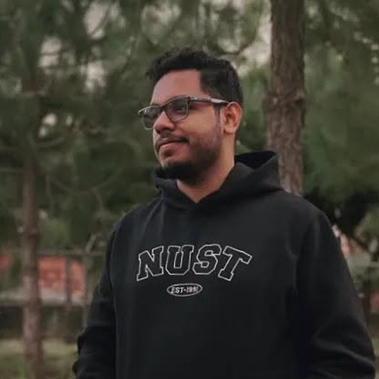

Open Loops
Everything I've started and not finished, moved through four stages instead of sitting in my head.
Small tools for small problems.
3 so far. More when something annoys me enough.
Everything I've started and not finished, moved through four stages instead of sitting in my head.
A reader with no algorithm in it. I pick the sources; it brings them and gets out of the way.
Free game deals, collected in one place, so I stop finding out after they've expired.

My personal utility stash — things I made because I wanted them, in the way I wanted them.
No CS background. Just problems, ideas, and plain language. Turns out that's enough to build a lot.